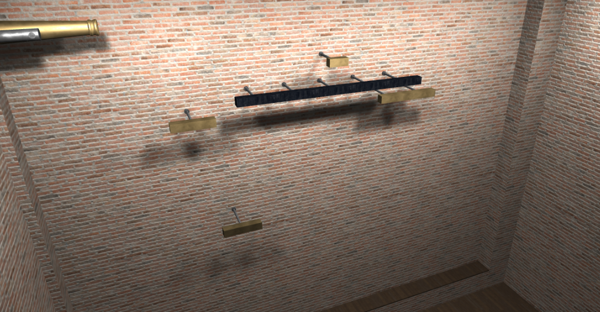

In this competition, you'll launch balls to hit rectangular targets, while avoiding rectangular barriers. You'll compete to hit all the targets, while avoiding the barriers, in as little time as possible.
Here is a typical Bounce competition setup:

And here is the same setup in schematic form, with coordinates for the obstacle and target corners.
The setup is a square 10m high and 10m wide, filled with rectangles, some red and some dark gray. The red rectangles are targets, and the dark gray ones are barriers. You have to hit all the targets, while avoiding the barriers.
To do this, you launch balls from the upper left edge of the playing area, at any left-to-right horizontal speed you like. Each ball you launch falls toward the bottom of the playing area at a gravitational acceleration of 9.81 m/s^2. Given the 10m height of the area, this means it'll hit the bottom in just over 1.4s. Or, if you launch it fast enough, it'll hit the far right edge in less time than that.
But, if the ball hits any target or barrier, then it bounces off, perfectly elastically. The target or barrier retracts so you won't hit it again. This means you can keep the ball going for quite a while by launching relatively slowly, and arranging for it to hit targets, bouncing back up off of each one. The job, then, is to figure out a horizontal speed that makes the ball hit as many targets as possible before leaving the playing area, without hitting any barriers.
In some cases, you'll be able to hit all the targets with a single ball, but you're allowed as many balls as you need. You specify a launch speed for each ball, and they get launched one after another, each one launched as soon as the prior one entirely leaves the playing area. For each ball you must also enter the location of its center, and the time, of the final target collision the ball makes before leaving the playing area. (It's assumed you won't launch a ball without expecting to hit at least one target.) This precludes solving the problem by iterative guessing; you have to do the math.
For each proposed solution you submit, you'll get a movie of the result. If you hit all the targets without hitting any barriers, and if you get the right final time and location for the final collision of each ball, then you have a valid solution, and you also get a table of numerical collision data so you can confirm your math. Invalid solutions still get the movie, so you can see roughly where you went wrong. But they don't get a numerical table of collision data; you still have to fix the math yourself.
Your score is based on the total travel time for all balls, plus an assumed 1 second delay between balls. (So if you have three balls with travel times of 1.5, 2.1, and 1.6, your total time is 7.2.) Each competition has a target time to shoot for, and you get a full score of 100 if you hit that time. Longer times get a reduced score in proportion to the amount of excess time, for instance 50 points out of 100 if you take twice the target time.
And, finally, you are only allowed 5 free submissions in which to refine your answer. You may make more submissions if you need to, but your score goes down by 10% for each submission past the limit.
Since invalid solutions aren't penalized, start by just launching a ball or two, guessing several different speeds to hit a target or two. Follow the diagram and see if you can calculate the impact times and locations you get from this.
Once you've tried it out, calculate a solution that uses one ball per target. This is the easiest kind of solution to do. Calculate the time the ball will take to fall to the level of the target, and calculate the speed necessary for the ball to hit the target at that time.
Doing this requires calculating the timing of the ball as it rises and falls, computing the length of time for each rise and fall, and trying to get a horizontal speed that will hit all the desired targets at the right times. Or, you can be more creative (some competitions require this) and bounce off the sides or even the bottom of targets)
The faster you hit all the targets, the better the score. Thus, using fewer balls is generally a good idea, though a couple of fast balls may sometimes get the job done more quickly than one slow ball. And for a given ball, using the fastest speed that will still hit all the targets is helpful.
As you may know, "perfectly elastically" means the ball bounces away with the same velocity it hit, but with the velocity component in the direction of the target or barrier negated or reversed. In the diagram below, the ball hits the rectangle with a downward velocity of 2 m/s and a horizontal velocity of 3 m/s. After the collision, it has an upward velocity of 2 m/s, and the horizontal velocity is unchanged. It's important to think of the ball's velocity in two components -- vertical and horizontal.
You may find yourself designing ball trajectories that come close to the corners of the targets. You may bounce the ball off of corners and the simulation will accurately show the result, but the balls tend to fly off in unusual directions when you do this, and if you just barely hit the corner, the result may be a slightly skewed bounce. We noted above that a corner hit leaves a faded square, not circle. Watch for this if you are confused about an odd bounce.
As you get into the challenge, you'll find you need to do a lot of computations of ball falling and rising times, speeds, etc. It's easy to make dumb mistakes. Keeping an orderly table of your work, and double checking it, will save you from extra submissions.